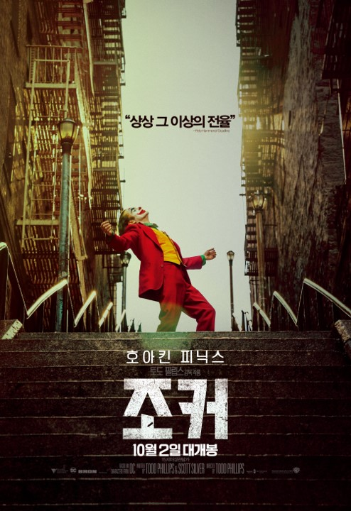
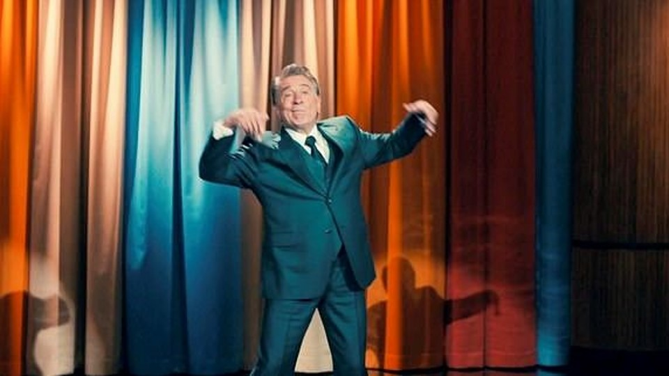
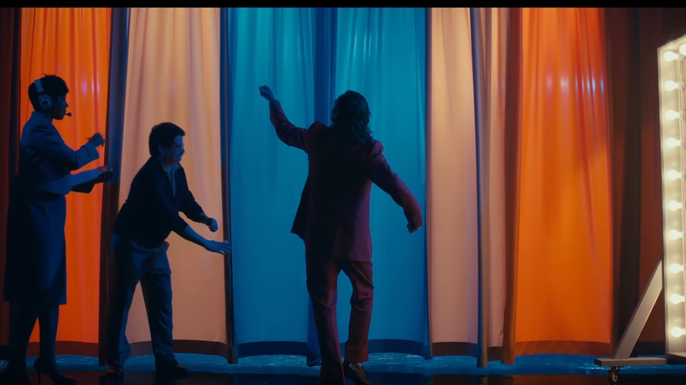
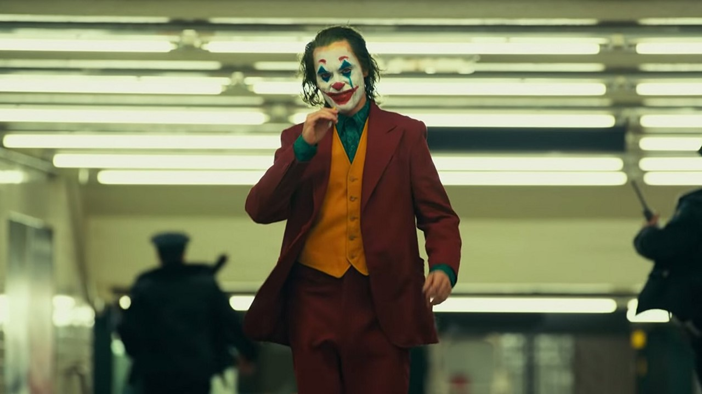
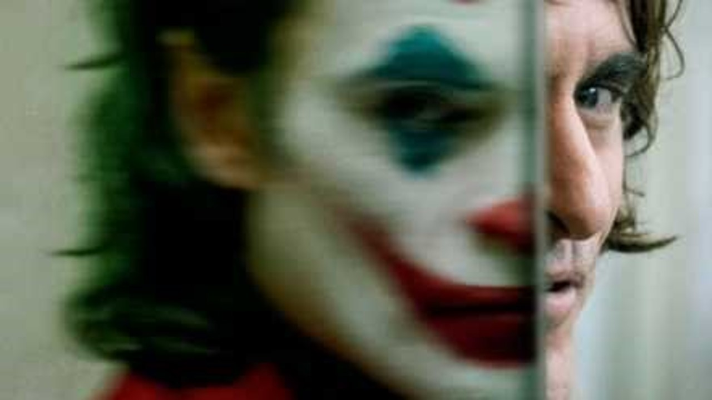

제 76회 베니스국제영화제에서 황금사자상을 받은 조커!
요즘 아주 핫하다고해서
시험 일주일 전에 친구랑 imax에 가서 조커를 봤습니다.
친구는 더럽게 재미없었다는데 저는 재밌게 봤습니다…ㅎㅎ
이번에는 영화 조커에서 쓰인 표현들 특히 언어유희에 대해서 알아보겠습니다!

조커가 ‘머레이 쇼’에서 선보였던 마지막 ‘Knock Knock＇조크에는
사실 영어권 사람들이 아니면
이해하기 힘든 의미가 담겨있었습니다.
이런 개그는 번역으로 전달하기 힘들고 문화적인 배경도 알고 있어야 완벽하게 이해할 수 있어서
이 의미를 아는 분들은 별로 없을 거 같아 소개해봅니다.

Knock Knock 개그는 영어권 사람들에게는 굉장히 진부한 조크입니다
발음이 비슷한걸 이용한 개그로
우리나라로 치면 ‘아재개그’같은 느낌입니다
예를 들자면
A: Knock Knock
B: Who’s there?
A: Orange
B: Orange Who?
A: Orange you glad to see me?
(개그 포인트, 언어 유희)
A가 B에게 조크를 걸면 A는 이름을 답하고 B는 이름 누구?? 라고 합니다 그럼
A가 펀치라인으로 언어유희를 날리는 플로우로 흘러갑니다
위의 예시는 Aren’t you glad to see me? 와 비슷하네요
아무튼 이 ‘Knock Knock’ 개그는 영어권 사람들에게는 진부하고
성인의 관점에서 보면 유치하기도 합니다
이것이 조커가 노트를 찾다가 ‘Knock Knock’ 개그를 칠 때
머레이가 “그걸 꼭 노트에서 찾아야겠어요?” 라고 한 이유입니다.
조커는 이후 “제대로 하고 싶어서요”라고 답한 후 ‘Knock Knock’ 개그가 펼쳐집니다

조커의 개그를 살펴보면
조커: Knock Knock
머레이: Who’s there?
조커: It's the police, mam.. your son's been hit by a drunk driver. He's dead
뭔가 이상하지 않나요?
정석적인 플로우 대로라면
약속된 대화를 주고 받고나서
이름
이름 누구요?
동음이의어를 이용한 언어유희를 해야하는데
조커는 개그포인트도 없는 불쾌한 말을 던져버렸습니다.
‘Knock Knock’ 개그의 배경을 모르는 사람이라면 그냥 재미없는 농담이지만
이를 알고있는 영어권 사람들이게는 섬뜩한 부분이 있습니다.

영화에서 조커는 언어유희에 있어서 좋은 개그들을 보여줍니다.
Don’t forget to smile 에서 forget to 를 지워 Don’t smile로 만든다거나
‘웃는거 잊지마세요’를 forget to 를 지워 ‘웃지마‘ 로 만든다거나
I just hope my death makes more cents than my life 에서는
‘내 죽음이 내 삶보다 가치있기를＇부분의 sense를 비슷한 발음의 cents로 바꿔
‘내 죽음이 내 삶보다 더 한 푼 벌기를＇으로 바꿔버립니다.
퇴근 도장을 찍어야지 (punch out)을 외치며
주먹질 (punch)을 날려 퇴근 기계를 부셔버리는 등
괜찮은 언어유희를 보여줍니다.
때문에 사람들은 Knock Knock 개그의 마지막 한방의 언어유희를 기대하게됩니다.
그러나 조커는 정해진 플로우를 지키지 않고, 웃음포인트도 없는 기괴한 말만 던집니다.

[ It's the police, mam.. your son's been hit by a drunk driver. He's dead ]에서
[ He’s dead ] 부분이 포인트 인데요
He‘s dead와 his dad의 발음이 똑같은 언어유희를 이용해서 두 가지 뜻으로 해석이 가능합니다
경찰입니다, 아드님이 음주운전자에게 치였습니다. 사망했습니다
경찰입니다, 아드님이 음주운전자에게 치였습니다. 그의 아버지한테요
이 장면에서 아서 플랙이 코메디언이 되는 것을 포기하고 조커의 각성을 표현하는것에 감탄했습니다…
오늘은 영화 ‘조커＇의 Knock Knock 개그에 대해서 알아보았는데요
대부분의 사람들이 영화에 숨겨진 의미들을 놓치는 것이 아쉽네요 ㅜㅜ..
그럼 오늘은 여기까지 뿅!

 Home
Home